Manage Your Node with Lightning Terminal (LIT)
Lightning Terminal is a graphical interface and management tool designed for the Bitcoin Lightning Network. Developed by Lightning Labs, it allows node operators to manage payment channels more efficiently thanks to advanced functions like Pool (liquidity marketplace), Loop (on-chain/off-chain swap), and Faraday (risk and performance analysis). With this tool, you can buy and sell inbound liquidity, optimize channel management, and receive recommendations to maximize node profitability. It is the ideal option for those who want to actively participate in the Lightning Network without needing to use complex terminal commands.
4.1 Key Lightning Terminal Features
We begin by accessing the Lightning Terminal interface (from now on LIT) via the following address: https://lit.cashu4cscommunity.xyz.
Image 1: LIT login page.
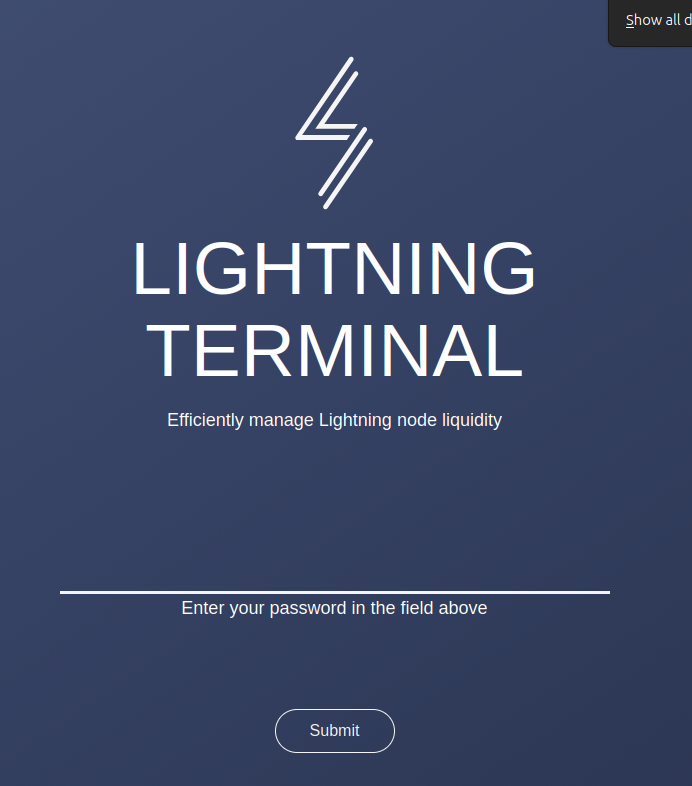
- Enter the password generated in the
First Stepstutorial, which is located in theapp-data/lit/lit.conffile, parameteruipassword. - Click the
Submitbutton to access.
Home
Image 2: Home Page.
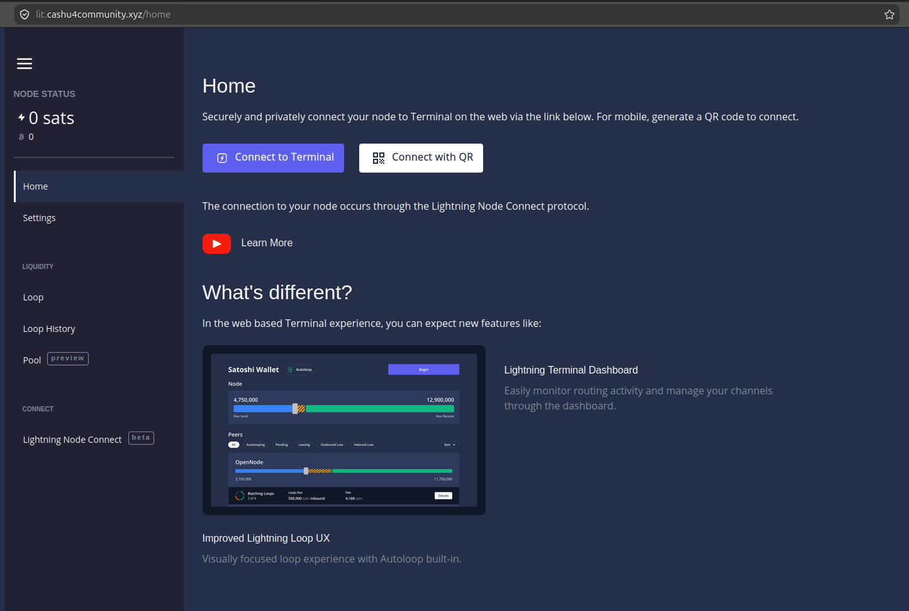
- Node Bitcoin On-chain / Lightning balance.
- Quick access to the Lightning Terminal Service.
- Access to Lightning Labs YouTube channel.
Settings
Image 3: Settings Page.
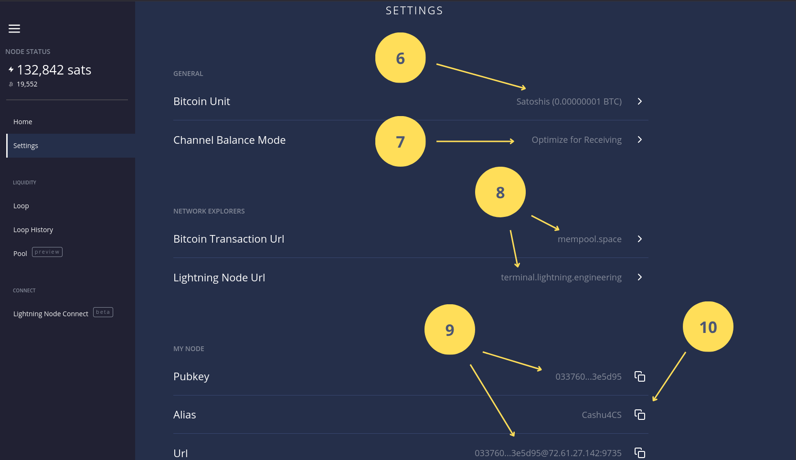
- Select Bitcoin unit (BTC, Bits, Sats).
- Set channel optimization mechanisms (Receiving, Sending, or Routing).
- Block explorers.
- Public key and node URI useful for opening channels or buying liquidity.
- Node alias.
Lightning Loop
Loop is a non-custodial service offered by Lightning Labs that acts as a bidirectional bridge (on/off-ramp) between the Lightning Network and the Bitcoin blockchain. Its main function is to allow users to move funds from one side to the other without needing to open or close channels, thus solving liquidity problems in the network.
Image 4: Lightning Pool.
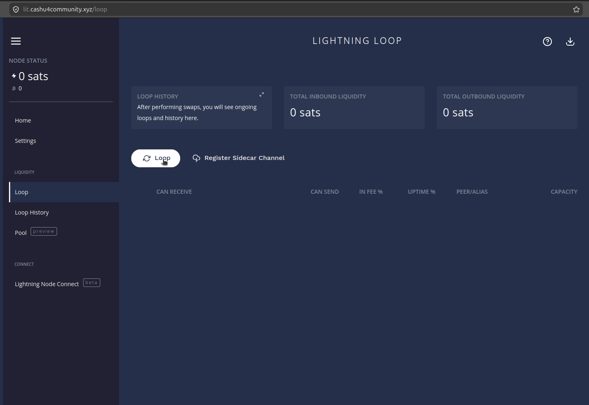
- Inbound / Outbound Capacity.
- Access to the Loop service.
- Active channels on the node.
The following images show the flow to perform a Loop In operation, meaning adding liquidity from the node wallet's on-chain balance.
Image 5: Lightning Loop In.
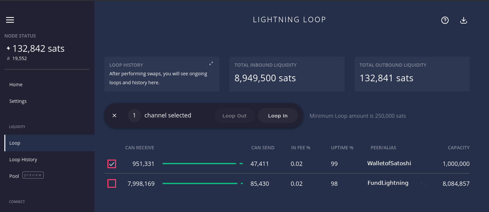
Image 6: Selecting the on-chain amount to add to the selected channel.
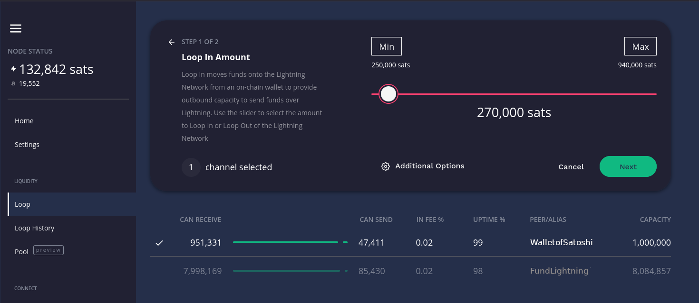
Image 7: Confirm Loop In operation after calculating the fee.
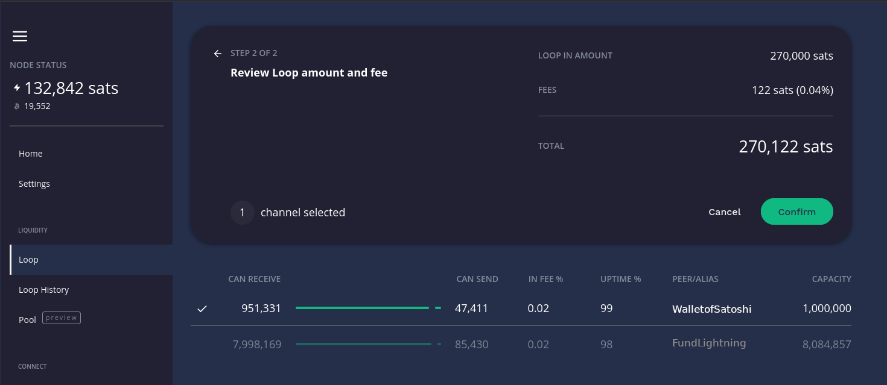
- Loop In (to receive more inbound liquidity on a channel): You need a balance in your on-chain wallet.
- Loop Out (to send funds from Lightning to the on-chain network): You need available balance within a payment channel.
You can watch Loop in action in this video.
Lightning Node Connect
The Lightning Node Connect (LNC) function in Lightning Terminal is a mechanism that allows you to connect to your Lightning node remotely, securely and privately through a web browser or mobile application, without needing to configure port forwarding or use Tor.
Think of it as "remote access" designed specifically for Lightning nodes, solving connectivity problems like NAT (Network Address Translation) or firewalls that usually block incoming connections.
Image 8: Lightning Node Connect Page.
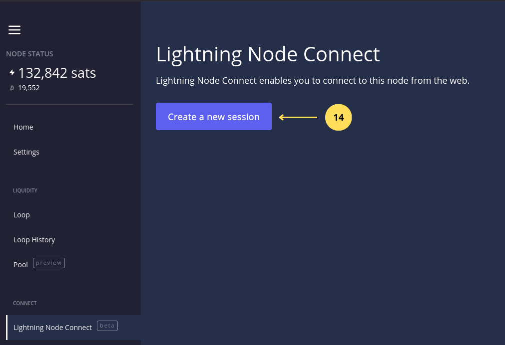
- Click to create a session to the Lightning Terminal Service.
Image 9: Creating a new Lightning Terminal Service session.

- Set the session name.
- Select privileges
Adminfrom the available privileges (Admin, Read-only, and Custom). - Click
Submitto create the session.
Image 10: New Lightning Terminal Service session options.
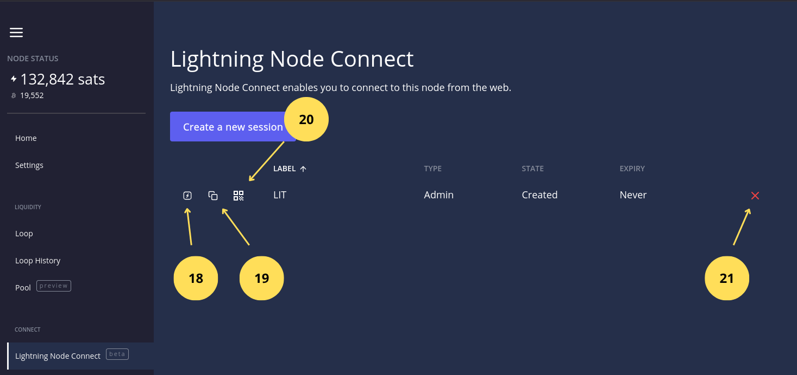
- If we click, it redirects us to the Lightning Terminal Services website to enter the 12-word phrase that establishes the connection to the node.
- If we click, we copy the 12 words.
- Shows a QR useful if we want to connect to the node from Zeus or Alby Hub.
You can watch the following video about LIT here.
4.2 Accessing Lightning Terminal Service
At this point we can access this service from step 18 above, or by accessing directly from here.
Image 11: Lightning Terminal Services Main Page.
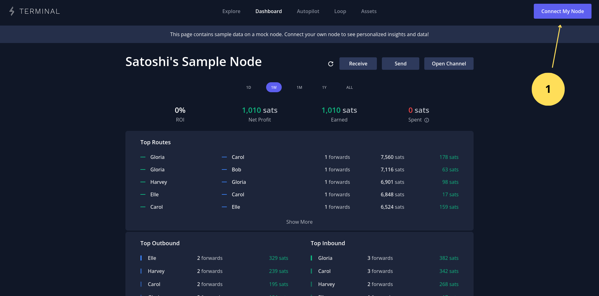
- Click "Connect to my node".
Image 12: Connecting to the node via 12 words generated by LIT.
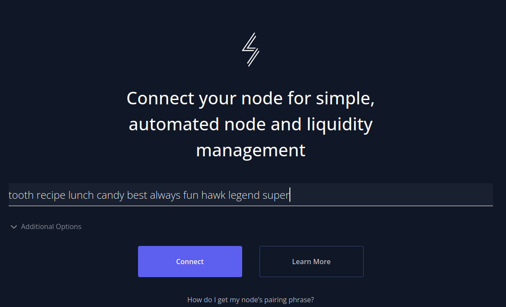
- Paste the 12-word phrase obtained in LIT when creating the new session.
- Click Connect.
Image 13: Setting the connection password.
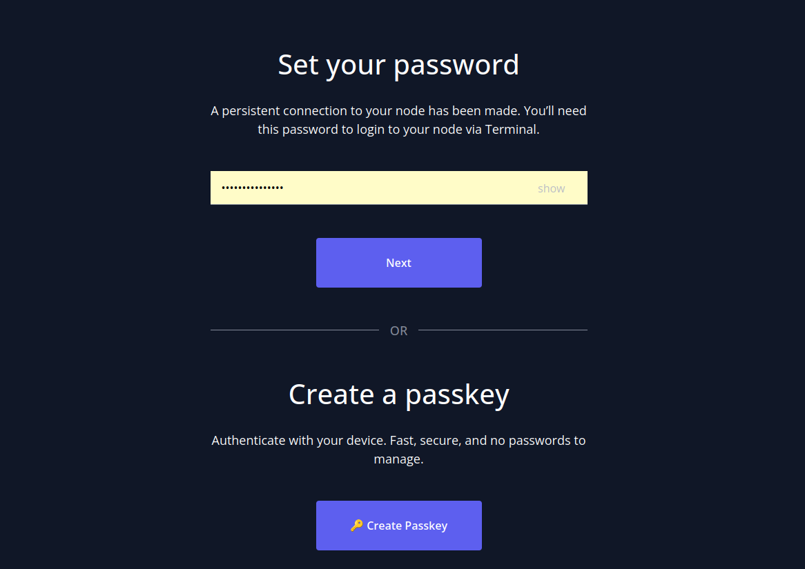
- Insert a password for the session (this is not the same password we used for LIT; they are different services).
- Click Next.
Image 14: Confirming the session password.
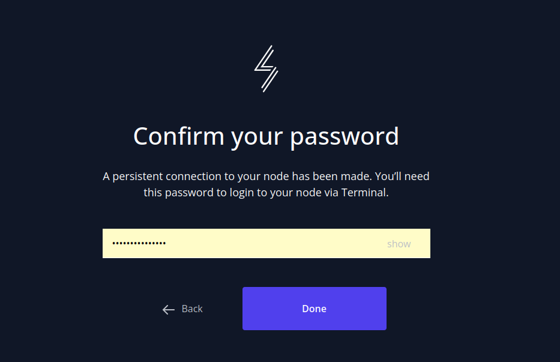
- Confirm the session password.
- Click the Ready button.
Image 15: Lightning Terminal Services Main Dashboard.
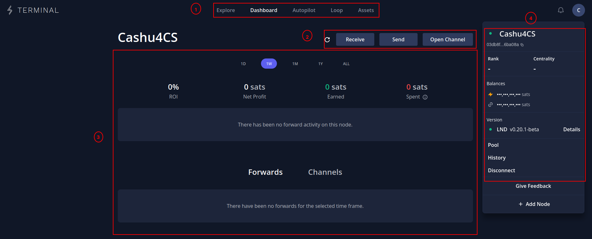
- Navigation menu: Allows us to navigate between the Lightning network explorer, Autopilot (function that automates on-demand tasks on the node), Loop (the same functions we saw in LIT but with an improved interface), and Asset for those who want to issue tokens on the Lightning network.
- Action buttons: Allows sending, receiving both on Lightning and on-chain, plus opening channels.
- Node statistics area: Shows node statistics over a time period like earnings and losses from routing, among other things.
- Routing and channel information: We can interact with routings and channels; in the latter we can obtain information, change fees, close, and force close if it's offline for a long time.
- Node information menu: Shows Lightning and on-chain balance, node version, operation history among other options.
If you want to deepen your knowledge of these tools, visit this link.